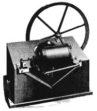

Well, here it is. The straight-and-uncut direct from the pages of the December 1, 1870 issue of The Technologist. See? And you thought research into heating houses and driving engines with the sun's power was something new!
We have only one regret as we reprint this 105-year-old gem: Somehow, during the chaos and confusion that accompanied the final lockup of this issue, we misplaced the name of the kind MOTHER reader who recently found-and sent to us-the article below. So, please, "kind MOTHER reader" ... step forward and identify yourself again so we can give you proper credit. And thanks for sharing this bit of solar energy memorabilia with the 1,000,000-plus other MOTHER readers!
THE recent attempts of Captain Ericsson to utilize the solar rays as a source of heat for producing motive power have attracted so much attention that we offer no apology for reproducing, from Engineering (London), the cut and description contributed to that journal by the distinguished inventor.
"On grounds which will appear hereafter, it is not my intention at present to enter on a minute description of the solar engine. I feel called upon, however, in order to remove prevailing erroneous impressions on the subject, to state briefly the general features of my scheme. At the same time, let it be understood that the solar engine is not intended as a competitor with the steam engine, where coal can be obtained; nor is it proposed, in the first instance, to erect this motor where there is not continuous sunshine.
The accompanying illustration, which derives its chief interest from the fact that it represents a piece of mechanism actuated by the direct agency of solar heat, is copied from a photograph of a small solar engine just completed, intended as a present to the French Academy of Sciences. Apart from being a motor, this engine has been designed to operate as a meter for registering the volume of steam generated by the concentrated heat of a sunbeam of a given section. Regarded as a steam meter, it is important, as it verifies the results of previous experiments and previous calculations based on the number of units of heat developed in evaporating a certain weight of water in a given time. Engineers will not fail to notice the unusual proportions of the working parts, nor will they fail to appreciate the object in view-that of reducing the friction to a minimum-an indispensable condition in a meter. The entire mechanism being shown with perfect distinctness, it is only necessary to explain that the square pedestal which supports the steam cylinder (4 1/2 in. in diameter), the beam center, and the crank shaft, conceals a surface condenser.
Under a clear sun the engine which our engraving represents, runs, with perfect uniformity, at a fixed rate of 240 revolutions ,per minute, consuming at this rate only part of the steam furnished by the solar steam generator, now temporarily employed, belonging to an engine of greater dimensions constructed some time ago. With reference to ascertaining the amount of mechanical power developed by the solar engines, engineers need scarcely be reminded that, by dispensing with a vacuum, the atmospheric resistance and back pressure exerted against the pistons furnish accurate means for measuring the dynamic force transmitted by sunbeams of definite sections.
Plans and descriptions of the mechanism by which the suns radiant heat is concentrated, and of the steam generator which receives the concentrated heat, I shall be compelled, for some time, to withhold from publication. Experienced professional men will appreciate the motive, that of preventing enterprising persons from procuring patents for modifications. In connection with the course thus deemed necessary, it will be proper to mention that I have, in several instances, notably in the case of the screw propeller and the caloric engine, been prevented from perfecting my invention in consequence of conflicting privileges having in the meantime been granted to others.
Regarding the solar engine, I avail myself of this opportunity to say that I shall not apply for any patent rights, and that it is my intention to devote the balance of my professional life almost exclusively to its completion. Hence my anxiety to guard against legal obstructions being interposed before perfection of detail shall have been measurably attained. Within a few years the entire engineering community of both hemispheres will be invited to take the matter in hand. In the meantime let us hope that no exclusive privileges may be granted tending to throw obstacles in the way of an unrestricted manufacture and introduction of the new motor wherever it may be applicable.
The foregoing having introduced the subject, let us now enter upon a cursory examination of the merits of the solar engine. The several experiments that have been made show that the mechanism adopted for concentrating the sun's radiant heat abstracts, on an average, during nine hours a day, for all latitudes between the equator and 450, fully 3 -5 units of heat per minute for each square foot of area presented perpendicularly to the sun's rays.
A unit of beat being equivalent to 772 foot-pounds, it will be perceived that, theoretically, a dynamic energy of 2702 foot-pounds is transmitted by the radiant heat, per minute, for each square foot; hence 270,200 foot-pounds for an area of 10 ft. square.
If we devide this sum by the adopted standard of 33,000, we ascertain that 100 square feet of surface exposed to the solar rays develop continuously 8·2 horse power during nine hours a day, within the limits of latitude before mentioned.
But engineers are well aware that the whole dynamic energy of heat can not be utilized in practice by any engine or mechanical combination whatever, nor at all approached; hence I have assumed, in order not to overrate the capability of the new system, that a solar engine of 1-horse power demands the concentration of solar heat from au area of 10 feet square.
On this basis I will now proceed to show that those regions of the earth which suffer from an excess of solar heat will ultimately derive benefits resulting from an unlimited command of motive power which will, to a great extent, compensate for evils hitherto supposed not to be counterbalanced by any good.
Before entering on this task of estimating the results of utilizing sun power, it will be well to scrutinize, as closely as we can, the mechanical devices by means of which we propose to avail ourselves of the fuel contained in that great storehouse from whence it may be obtained free of cost and transportation. The solar engine, we have seen, is composed of three distinct parts.
The engine, the steam generator, and the mechanism by means of which the feeble intensity of the sun's rays is augmented to such a degree that the resulting temperature will exceed that of the lowest pressure of steam admissible in an efficient engine.
As to the motor itself, it suffices to say, that it is essentially a modern steam engine, utilizing, to the fullest extent, the mechanical energy of the steam generated by the concentrated solar rays.
Regarding the steam generator, it will only be necessary to state that it is not exposed to the action of fire, clinkers or soot, and therefore can only suffer from the slow action of ordinary oxidation. We have lastly to consider the efficiency of the mechanism by means of which the solar heat is concentrated and the temperature raised above that of the water in the steam generator.
Regarding this mechanism-concentration apparatus, it may appropriately be termed- it will be asked: is it costly? is it heavy and bulky so as to render transportation difficult ? and finally the question will be put, is it liable to derangement and expensive to keep in order? I will answer these questions in the same order in which they have been presented.
The cost is moderate. The weight is small-indeed lightness is the most notable peculiarity of the concentration apparatus.
As to bulk, this apparatus is composed of small parts readily put together. Regarding durability, the fact need only be pointed out that certain metals, however thin, if kept dry, may be exposed to the sun's rays during an indefinite length of time without appreciable deterioration; hence, unlike the furnaces of steam boilers, which soon become unserviceable, structures protected as the concentration apparatus is, by thin metallic plates, can not be rendered unserviceable from the mere action of the sun's rays.
Another question will be asked, whether the solar engine will answer as well on a large as it does on a small scale? The following reply will effectually dispose of this pregnant query. It is not necessary, nor intended, to enlarge in future the size of the apparatus by means of which the solar intensity has been successfully concentrated and the temperature sufficiently elevated to generate steam for the engines which have been built.
The maximum size adopted has been adequate to utilize the radiant heat of a sunbeam of 35 square feet section.
The employment of an increased number of structures will therefore be resorted to when greater power is wanted, as we increase the number of hands when we desire to perform an additional amount of work. The motor itself, the steam cylinder and other parts, will obviously be proportioned as at present with reference to the pressure of steam employed and the work to be done.
Agreeably to our introductory remarks, it is not proposed, in the first instance, to apply solar engines in places where there is not steady sunshine. The isolated districts of the earth's surface suffering from an excess of solar heat being very numerous, our space only admits of a glance at the sunburnt continents. An examination of the extent of these will show that the field for the solar engine, even with the proposed restriction, is not very contracted. There is a rainless region extending from the north-west coast of Africa to Mongolia, 9,000 miles in length, and nearly 1,000 miles wide. Besides the Northern African deserts, this region in eludes the southern coast of the Mediterranean east of the Gulf of Cabes, Upper Egypt, the eastern and part of the western coast of the Red Sea, part of Syria, the eastern part of the countries watered by the Euphrates and Tigris, Eastern Arabia, the greater part of Persia, the extreme western part of China, Tibet, and, lastly, Mongolia. In the western hemisphere, Lower California, the table-land of Mexico and Guatemala, and the west coast of South America, for a distance of more than 2,000 miles, suffer from continuous, intense, radiant heat.
Computations of the solar energy wasted on the vast areas thus specified would present an amount of dynamic force almost beyond conception. Let us, therefore, merely estimate the mechanical force that would result from utilizing the solar heat on a strip of land, a single mile in width, along the rainless western coast of America; the southern coast of the Mediterranean before referred to; both sides of the alluvial plane of the Nile in Upper Egypt; both sides of the Euphrates and Tigris for a distance of 400 miles above the Persian Gulf ; and, finally, a strip one mile wide along the rainless portions of the shores of the Red Sea, before pointed out. The aggregate length of these strips of land, selected on account of being accessible by water communication, far exceeds 8,000 miles. Adopting this length and a width of one mile as a basis for computation, it will be seen that the assumed narrow belt of the sunburnt continent covers 223,000 millions of square feet. Dividing this by the area necessary to produce 1-horse power, we learn that 22,300,000 solar engines, each of 100-horse power, could be kept in constant operation, during nine hours a day, by utilizing only that heat which is now wasted on a very small fraction of the land extending along some of the water fronts of the sunburnt regions of the earth.
It will be said that these extravagant figures have no practical significance. Due consideration, however, can not fail to convince us that the gradual exhaustion of the coal fields will inevitably cause great changes in regard to international relations, in favor of those countries which are in possession of continuous sun power. Upper Egypt, for instance, will, in the course of time, derive signal advantage, and attain a high political position, on account of her perpetual sunshine and the consequent co mman d of unlimited motive force. The time will come when Europe must stop her mills for want of coal. Upper Egypt, then, with her never-ceasing sun power, will invite the European manufacturer to remove his machinery and erect his mills on the firm ground along the sides of the alluvial plain of the Nile, where sufficient power can be obtained to enable him to run more spindles than a hundred Manchesters.
I reserve for another occasion the consideration of the important question: to what extent can the irregular sunshine of Europe be rendered available in operating a regular motor, by the expedient of alternately accumulating and drawing upon reserved force ?
|
 |
|
|